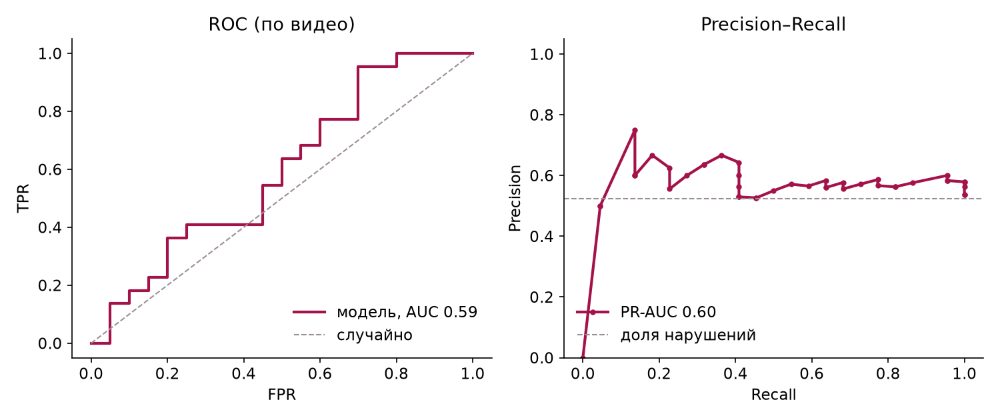
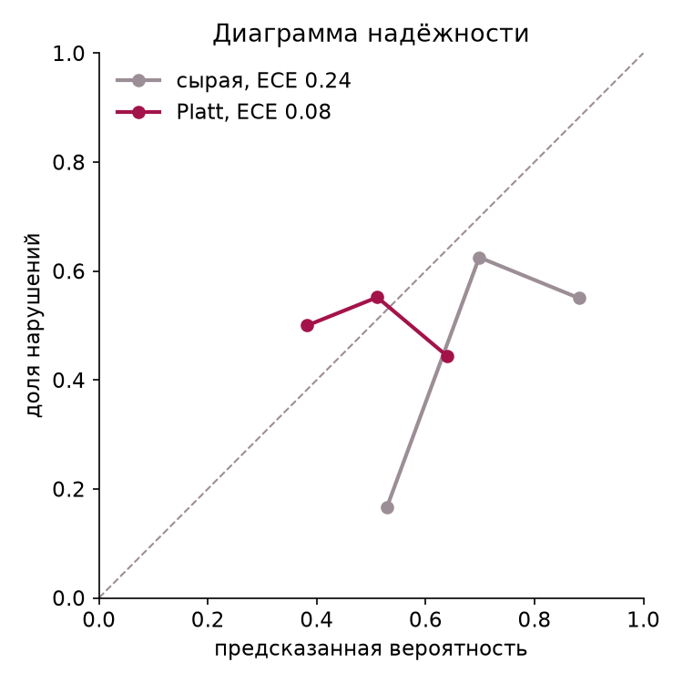
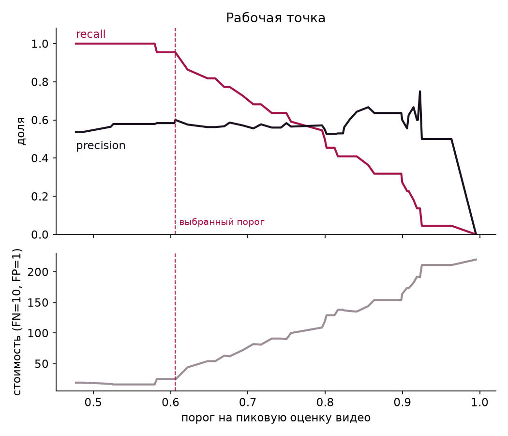
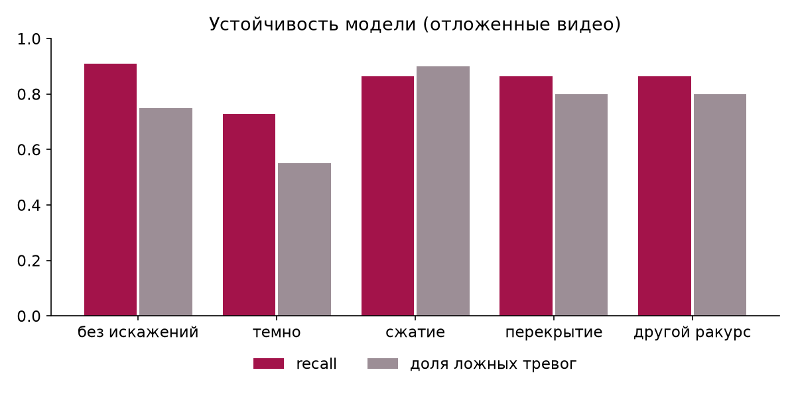

ForteBank · Datathon 26 · Project documentation
An on-premise AI service that reviews cash-desk video, finds moments that may break cash-handling rules, and hands a human reviewer the timecode, evidence frames and the exact clause of the National Bank regulation.
Contents: 1 Summary · 2 Requirements coverage · 3 Workflow of one video · 4 Architecture · 5 Machine learning · 6 Continuous learning · 7 Results · 8 Database · 9 Legal basis · 10 Tech stack · 11 Limitations · 12 Future work · 13 Team split · 14 How to run
Problem. Bank cash operations are recorded on video, but reviewing hours of footage by hand is slow. ForteBank asked for a service that a bank employee can upload a video to and get back: a verdict (“no violation found” or “signs of possible violations”), and for every finding its type, timecode, 1–3 evidence frames, a plain description of what is visible and a reference to a Kazakhstan regulation. The service must run fully on premises, answer through a keyed API within 5 minutes per video, and cope with a different camera angle at the final.
What we built. A FastAPI service with a React interface and PostgreSQL storage, packaged as two Docker containers. Every video goes through three stages: object detection (YOLOv8n and YOLO-World), scene preparation (finding the cashier’s workplace, zooming into the desk, CLIP scene embeddings) and judgement, where explainable rules and a trained scene classifier produce episodes. Each episode is matched to a clause of NBRK Resolution No. 231 or No. 14 with a verbatim quote. Reviewers confirm or correct each verdict; those answers retrain the model, and a new version only goes live if it is not worse on held-out data.
Key results (all measured on videos excluded from training, 10 folds grouped by video):
| Requirement (case section) | How CashGuard meets it | Where |
|---|---|---|
| Web UI: upload, status, result (§4) | Drag-and-drop upload with progress, live processing status, report page with verdict banner, player with timeline marks, evidence frames, descriptions and legal basis; RU / KZ / EN, light and dark theme | frontend/src |
| Two verdicts only (§4.3, §5) | violation or no_violation; no “insufficient data” verdict | analyzer.py |
| Type, timecode, description per finding (§4.4–4.6) | Each episode has a human-readable type, stable type_id, start/end time, “what is visible” and “why it may be a violation” | rules.yaml, rules.py |
| Evidence frames (§5) | 1–3 JPEG frames per episode, first / strongest / last moment, with boxes drawn around people and objects | evidence.py |
| Rule and regulatory source (§4.7, §6) | Act name, clause and verbatim quote with an adilet.zan.kz link; only RK acts | rules.yaml → norms |
| No claims based on invisible data (§7) | Texts say “may indicate a violation”; postings, reconciliations and authority are never judged | rules.yaml |
| Fully local, portable (§7) | All weights baked into the image at build time; YOLO_OFFLINE=1; verified with --network none | Dockerfile |
| Keyed two-step API (§10) | POST /api/v1/analyze → job_id; GET /api/v1/jobs/{id} → processing / done / failed; X-API-Key checked in constant time | main.py, auth.py |
| 5-minute limit (§10, FAQ 14) | Deadline fixed at upload; frame rate, zoom pass and embeddings adapt to video length and machine speed; partial report with meta.coverage if time runs out | analyzer.py |
| Different camera angle (FAQ 4, criterion 5) | Workplace found automatically per video; model features subtract the video’s own median scene | scene.py, learned.py |
| No face recognition, no audio (FAQ 28–29) | Only person boxes are used; audio track is never decoded | video.py |
| Open-source models with commercial use (FAQ 24) | YOLOv8n and YOLO-World (AGPL-3.0, commercial licence available), CLIP (MIT) | README |
| Test videos not used for training (§10) | The service learns only from videos a reviewer explicitly confirmed; LEARNING_ENABLED=false turns learning off | learner.py |
Timings below are from a real run of dataset video Х-4 (72.7 s, 291 frames) on a 12-core CPU without a GPU.
| Stage | Where (code) | What happens | Why this way |
|---|---|---|---|
| Upload | main.py · analyze | Extension check, size limit, chunked write to data/uploads, job row inserted, id returned immediately (HTTP 200) | The jury script polls; long processing must not block the request |
| Queue | jobs.py · JobManager | asyncio queue with one worker per model copy; blocking work runs in a thread so the API keeps answering status requests | One machine, one model in memory: no need for Celery/Redis |
| Detect | video.py, detector.py, analyzer.detect | Frames sampled at a rate chosen from video length and measured detector speed; YOLOv8n finds people, phones, bags, laptops; YOLO-World with a fixed vocabulary finds banknotes. Frames are kept as JPEG in memory | The 5-minute budget is computed up front; if detection runs late, frames are skipped adaptively |
| Prepare | scene.py, analyzer.prepare | Drop people behind the glass wall and duplicate boxes; find the cashier’s workplace from a person-occupancy grid; crop and enlarge the desk and detect small objects again; compute CLIP embeddings of the whole frame and the desk | A phone is ~15 px wide in a 464 px frame: invisible at full scale, visible when zoomed. Videos arrive without zones and the final angle differs |
| Judge | rules.py, learned.py, analyzer.judge | Rules step through observations (object × zone × duration). The model scores every half-second; stretches above the threshold become episodes; the type comes from the nearest labelled example. If a rule covers the same moment, the rule wins | Rules are explainable to the pixel; the model sees scene changes that rules cannot describe (open safe, bag left on desk) |
| Evidence | evidence.py | First, strongest and last frame of each episode with boxes, resized to ≤960 px, JPEG base64 | The jury schema asks for 1–3 JPEG frames per finding |
| Store | store.py | Verdict, violations and frame paths in PostgreSQL; JPEGs on disk; CLIP embeddings kept for learning; source video deleted | Data minimisation; base64 images inside rows would bloat the database |
| Review | Report.jsx · ReviewCard, learner.py | The reviewer marks “violation / no violation”, the second and the type; the answer goes to reviews | Uploaded videos carry no labels; a person provides them |
| Retrain | training.py, learner.py | After 3 new reviews, in the background and only when no video is being processed: grouped cross-validation, grid search, threshold, calibration, promotion gate, new row in model_versions | Improve on real data without ever making the live model worse |
| Retention | jobs.py · purge | Every 6 hours, reports and frames older than 90 days are deleted; reviewed videos keep only the label and embeddings | Personal-data minimisation |
| Stage (Х-4, 72.7 s video, 291 frames) | Time | Clock |
|---|---|---|
| Decode + YOLO detection | 37.5 s | 0 → 37 s |
| Workplace inference + desk zoom re-detection | 39.0 s | 37 → 76 s |
| CLIP embeddings (2 per second) | 12.4 s | 76 → 89 s |
| Rules, model, evidence frames, database write | 0.2 s | 89 → 89 s |
| Upload to finished report (wall clock, including upload and polling) | 92 s |
The service found “cash left open” at 50 s (label: 57 s) with calibrated confidence 0.49. Each report stores these timings in meta.timings.
Two containers started by docker compose: cashguard (Python service with the built React app) and
db (PostgreSQL 16, not exposed outside the compose network). An optional third container runs a Cloudflare quick
tunnel to give the jury a public HTTPS address without opening ports; it only forwards HTTP, all processing stays local.
42 staged videos from one room, overhead camera behind the cashier, 464×848, 11–143 s: 22 with a violation and a
labelled second, 20 clean. Types are not given; we watched every video and wrote down what happens at the labelled
moment (ml/violation_types.csv): 13 situations, most with one or two examples, and nearly every violation has
a near-identical clean “twin”.
Twice a second we take a CLIP ViT-B/32 embedding of the whole frame and of the desk crop and subtract the median embedding of the same video, which leaves “what changed” rather than “which room”. Features are the change itself, its ±1 s average and its 2-second difference (2,048 numbers). A standard scaler, PCA and an L2-regularised logistic regression score each moment. Training moments: label −1 s … +2 s as positive; clean videos and moments more than 5 s before the label as negative; each video weighs the same.
THRESHOLD_POLICY=cost).confidence field is a calibrated probability.

data/embeddings (≈1 MB per minute); the video itself is deleted.reviews (violation or not, second, type).RETRAIN_MIN_REVIEWS = 3 new answers, retraining starts in the background, waiting until no video is in processing so the 5-minute budget is never affected. It took about 20 s on CPU in our test.backend/models/base_set.npz) plus all confirmed videos. Same grouped CV, grid, threshold and calibration as offline.model_versions with metrics and the reason; any version can be re-activated, version 0 is the shipped model.| Variant | Correct | Recall | False alarms | Precision | F1 | F2 | MCC | Kappa | Median |Δt| |
|---|---|---|---|---|---|---|---|---|---|
| Always “violation” | 22/42 | 22/22 | 20/20 | 0.52 | 0.69 | 0.85 | 0.00 | 0.00 | — |
| Rules only | 20/42 | 4/22 | 4/20 | 0.50 | 0.27 | — | −0.02 | — | 2.5 s |
| Trained model only | 27/42 | 21/22 | 14/20 | 0.60 | 0.74 | 0.85 | 0.34 | 0.26 | 5.0 s |
| Rules + model (deployed) | 26/42 | 21/22 | 15/20 | 0.58 | 0.72 | 0.85 | 0.29 | 0.21 | 4.5 s |
Other model metrics: specificity 0.30, FPR 0.70, FNR 0.05, ROC-AUC 0.59, PR-AUC 0.60, Brier 0.30 (0.26 calibrated), timecode within 3 s 33% / within 5 s 57%. Exact violation type on held-out videos: 0 of 22; in 10 of 22 the model names a neighbouring type that cites the same legal clause.
Why these metrics. The jury scores the verdict per video and the classes are nearly balanced (22/20), so accuracy alone says little: answering “violation” every time already gets 52%. MCC and Cohen’s kappa do not reward that degenerate answer, so MCC selects the model. Recall and F2 reflect the FAQ’s statement that a missed violation is unacceptable. ROC-AUC and PR-AUC measure ranking independent of the threshold. Timecode error in seconds measures criterion 2. R² is not used: it is a regression metric and the verdict is a classification.

The MCC threshold (0.606) gives 21/22 recall with 14 false alarms, cost 24. The cost-optimal threshold (0.579) catches all
22 with 16 false alarms, cost 16, at one less correct verdict overall. Which one to run is a bank decision, exposed as
THRESHOLD_POLICY.
Every dataset video was re-encoded with a distortion, re-embedded with CLIP and scored by the fold model that never saw it, at the production threshold.
| Condition | Recall | FPR | ROC-AUC |
|---|---|---|---|
| Clean (1 frame/s) | 0.91 | 0.75 | 0.59 |
| Other angle (perspective + 7° rotation) | 0.86 | 0.80 | 0.60 |
| Dark (brightness × 0.35) | 0.73 | 0.55 | 0.63 |
| Compressed (½ resolution, JPEG 12) | 0.86 | 0.90 | 0.50 |
| Occluded (35% black block) | 0.86 | 0.80 | 0.46 |

The simulated angle change keeps ranking quality, which supports the per-video median subtraction. Heavy compression and occlusion drop it to chance. Training with the same distortions as augmentation was tested and rejected: it improved darkness and angle but cut clean-video recall to 0.64–0.86, unacceptable under the recall-first policy.
Protected attributes (gender, age, ethnicity) are neither in the data nor extracted, because face recognition is forbidden by the case. Demographic parity and equalised-odds gaps therefore cannot be computed honestly; doing so needs a separately consented labelling. As a substitute we split by shooting conditions: across brightness, video length and crowding terciles, the largest gap is 0.17 in recall and 0.43 in false-positive rate. The brightest third of videos has the most false alarms (FPR 0.88).
| Table | Contents | Integrity |
|---|---|---|
jobs | File name, status, verdict, error, meta (JSONB: duration, timings, coverage, model version), timestamps | CHECK on status and verdict; partial index on unfinished jobs for restart recovery |
violations | Type, title, source (rule / learned), timecode, end, confidence, description, observed, why, legal basis (JSONB) | ON DELETE CASCADE from jobs; unique (job, position) |
evidence_frames | Timestamp and path of each JPEG; files in data/evidence/<job> | Cascade from violations |
reviews | Reviewer answer: label, second, type, which model version first trained on it | A “violation” answer must have a second; one review per job |
model_versions | Status (active / retired / rejected), trigger, parameters, metrics, decision, weights path | Partial unique index: at most one active version |
The schema is created idempotently at start-up. Unfinished jobs are re-queued after a restart. Without
DATABASE_URL the same interface writes JSON files, which keeps tests and quick local runs dependency-free.
Only acts of the Republic of Kazakhstan, checked against the current editions on adilet.zan.kz:
Each violation type stores three separate texts: what is visible (with numbers from the episode), why it may be a violation (our wording), and the verbatim clause. All 18 types have a clause with quote and link. Where the acts have no direct prohibition (eating at the desk, an open safe as such), we cite the closest clause and explain the link instead of inventing one. The mapping is listed in the developer report as a register awaiting sign-off by the bank’s legal or compliance team.
| Technology | Where | Why | When used |
|---|---|---|---|
| Python 3.12 | backend, ML scripts | Ecosystem for vision models and data work | everything server-side |
| FastAPI 0.143, Uvicorn, Pydantic 2 | main.py | Async API, automatic OpenAPI docs at /docs, request validation | every request |
| asyncio queue + threads | jobs.py | Non-blocking processing without extra infrastructure | every job |
| ffmpeg (imageio-ffmpeg), OpenCV 5 | video.py, scene.py, evidence.py | Robust .mov decoding with rotation metadata; image ops; JPEG encoding | detect, evidence |
| Ultralytics 8.4: YOLOv8n, YOLO-World v2-s | detector.py | Fast CPU detection; open-vocabulary cash detection without labelled data | detect, zoom |
| PyTorch 2.14 (CPU), CLIP ViT-B/32 | embedder.py | Scene embeddings that capture what a list of objects cannot | prepare |
| NumPy 2.5 | learned.py | Inference of our model as plain matrix maths; weights as .npz, no pickle | judge |
| scikit-learn 1.9 | training.py | Scaler, PCA, logistic regression, metrics (ROC, AP, kappa) | training, retraining |
| PyYAML | rules.yaml | Rules, thresholds and legal quotes editable without code changes | start-up |
| PostgreSQL 16, psycopg 3 + pool | store.py | Relational data with JSONB for flexible parts; open source; familiar to banks | every job, review, retrain |
| React 19, Vite 8 | frontend/ | Small single-page app served by FastAPI; no UI framework needed | user interface |
| Plain CSS with tokens | styles.css | Light/dark themes, system fonts only so the UI works offline | user interface |
| matplotlib 3.11 | ml/report.py | Figures for the developer report | offline evaluation |
| Docker, docker compose | Dockerfile, compose file | One-command start; weights baked in at build so runtime is offline | deployment |
| Cloudflare quick tunnel | compose profile public | Public HTTPS address for the jury without opening ports | demo |
| pytest, FastAPI TestClient | backend/tests | 35 tests: API contract, rules, scene, store (incl. live Postgres in a throwaway schema), training, learning loop, retention | every change |
| Feature | Value | Why not done in the datathon |
|---|---|---|
| Fine-tuned detector for cash bundles, safe door state, laptop screen state | Directly attacks the main source of false alarms | Needs box-level labelling; scripts ml/train.py, ml/data.yaml are ready |
| Video action model (VideoMAE, X-CLIP) | Counting, bag hand-over and pocket gestures are motion, not single frames | Needs a GPU and more examples per action |
| Active learning | Send the most uncertain videos to reviewers first | Pays off with a real stream of videos |
| Own recordings and synthetic data for rare types | 7 of 13 types have a single example | Allowed by the FAQ; no time to film |
| Multi-camera and per-branch profiles | Different desks, angles and zones | Dataset has one camera and one room |
| Consented fairness audit by protected attributes | Prove accuracy does not depend on who is in the frame | Requires separate consented labelling |
| Real-time RTSP analysis, GPU, Redis/Celery workers, ONNX/OpenVINO | Live monitoring and 2–3× faster CPU inference; horizontal scaling | Out of scope for file upload; no GPU provided |
| AD/SSO login, roles, audit log; history, batch upload, auditor PDF | Bank information-security and daily usability requirements | Not required by the case; API already lists jobs |
| Drift dashboard with alerts (Prometheus, Grafana) | See quality drops immediately | ml/report.py computes drift on demand |
| Kazakh-language violation texts; in-app legal sign-off; case-management integration | Full KZ support; formal legal approval; findings flow into bank processes | Official KZ texts need verification; no access to bank systems by design |
The work divides along four ownership areas with clear interfaces: the pipeline produces a report dictionary, the backend stores and serves it, the frontend renders it, and the domain owner defines what a violation is and how it is justified. Each member owns their files, reviews the neighbouring area, and presents their part at the pitch.
Owns: backend/app/pipeline/detector.py, scene.py, video.py, embedder.py, learned.py, analyzer.py (stages 1–2),
backend/app/training.py, ml/train_classifier.py, ml/report.py, ml/dump_detections.py, ml/inspect_scene.py.
Delivers: violation_clf.npz, base_set.npz, ml/reports/model_report.md.
Pitch: sections 5 and 7.
Owns: backend/app/main.py, auth.py, config.py, jobs.py, store.py, learner.py, Dockerfile,
docker-compose.yml, backend/tests, backend/scripts.
meta.Delivers: running public service, API key for the jury, green test suite. Pitch: sections 4, 6, 8.
Owns: frontend/src: App.jsx, api.js, i18n.js, styles.css and components
UploadView, UploadDropzone, StatusViews, Report, ModelView, InfoViews, ZoneEditor, Icons.
Delivers: the built UI served by FastAPI; the live demo. Pitch: the demo and section 3.
Owns: backend/config/rules.yaml, ml/labels.csv, ml/violation_types.csv, ml/open_labels.xlsx,
ml/evaluate.py, README.md, the presentation.
Delivers: rule and norm catalogue, labels, documentation, deck. Pitch: sections 1, 2, 9, 11.
| Phase | Member 1 (ML) | Member 2 (Backend) | Member 3 (Frontend) | Member 4 (Domain) |
|---|---|---|---|---|
| 1 · Kick-off | Baseline YOLO on sample videos | Repo, API contract, Docker skeleton | Upload and report wireframes | Read the case; label review; legal research |
| 2 · Baseline | Workplace inference, zoom pass | Job queue, deadline, evidence frames | Upload, processing, report views | First rules and quotes in rules.yaml |
| 3 · Model | CLIP features, classifier, CV | PostgreSQL store, restart recovery | Evidence viewer, i18n, themes | Violation types per video; rule tuning |
| 4 · Learning | Retraining core, calibration, report | Reviews, gate, versions, retention | Review card, model quality page | Metric choice, cost weights, legal register |
| 5 · Release | Final metrics and robustness | Public tunnel, jury key, tests | Polish, mobile, accessibility | README, deck, pitch rehearsal |
.env with API_KEY=… and POSTGRES_PASSWORD=….docker compose up -d --build — the first build downloads model weights (10–20 minutes, ~4.5 GB image).curl http://localhost:8000/api/v1/health should return "status": "ok".http://localhost:8000/?key=<API_KEY>, upload a .mov, wait for the report, confirm the verdict.docker compose --profile public up -d, then read the trycloudflare URL from docker compose logs tunnel.docker compose exec cashguard python -m pytest -q. Developer report: python ml/report.py inside the container with the repo mounted (see README).